设置 · 导航与外观页
暗色
设计稿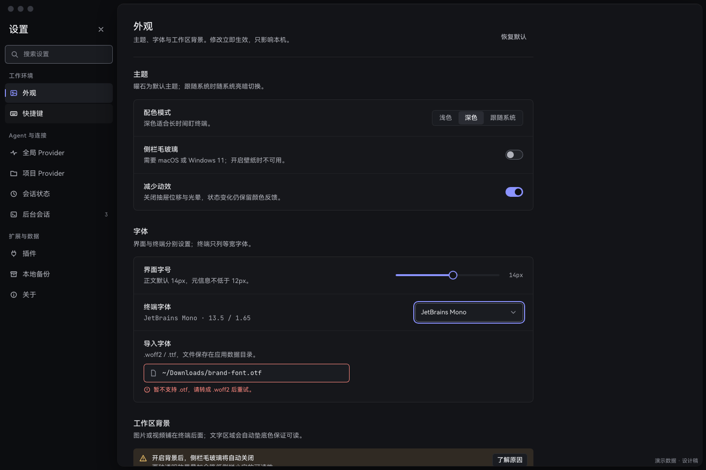
实装
亮色
设计稿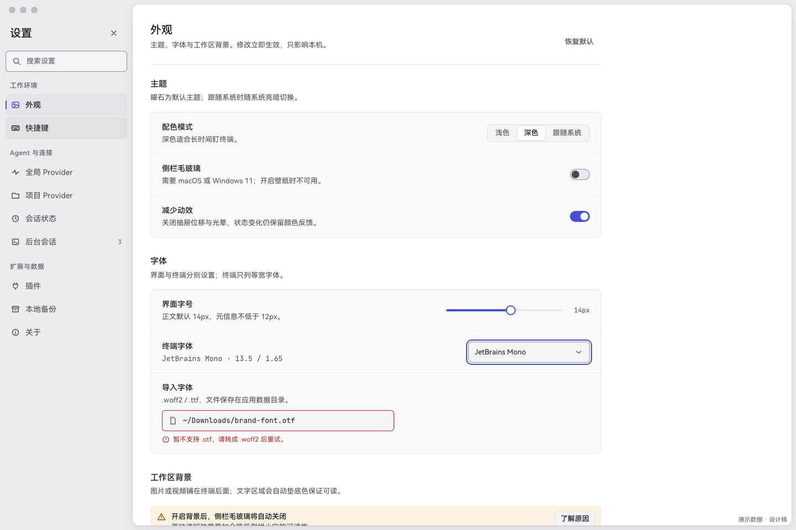
实装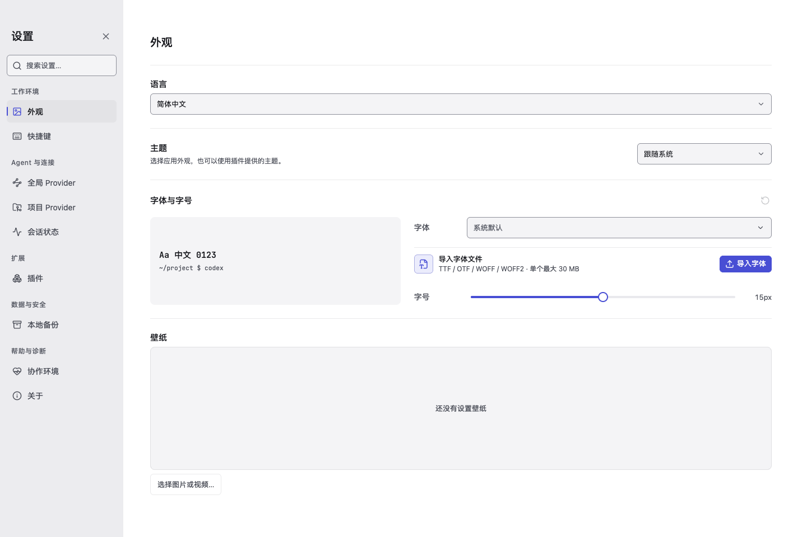
- ✓ 导航行 40、当前项 sidebar-active + 2px 竖条 + 500、分组标题 faint、搜索框 38 + border-strong 描边。
- ✓ 下拉/字段 38 高带描边，「主题」与「语言」一致；滑块轨道 4 / 滑块 14。
- △ 外观页内容不同：稿里画的是「配色模式分段 / 毛玻璃开关 / 减少动效」等示意行，实装是现有外观页（语言、主题下拉、字体与字号、壁纸）。T12 只换规格不增删设置项——稿里的毛玻璃开关属 T8 结论「可选、默认不开」，尚未排期实现。
- △ 分组卡片外框：稿里每组有 r8 + panel 底的 group 外框，外观页现状仍是「行 + 分隔线」。外观页的分组卡片化与 T19/T20 其余分区一起做（T20 已在 settings 分区引入 os-group），避免外观页单独一套。
- △ 页面最大宽：稿 880，实装外观页仍铺满。同上，随 T20 统一。
Quick Open
暗色
设计稿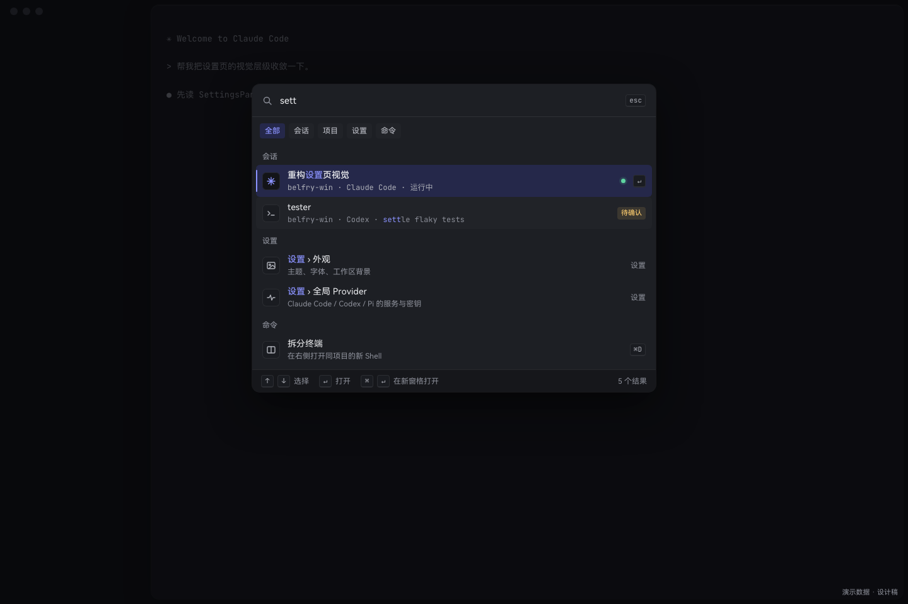
实装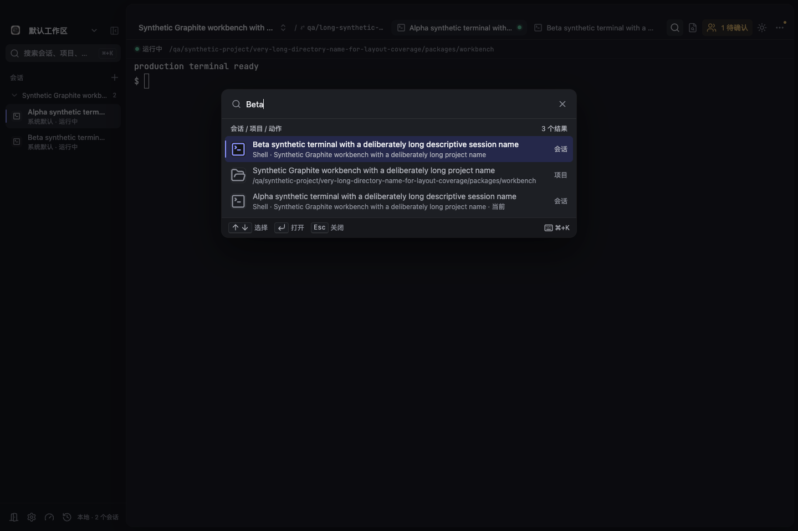
亮色
设计稿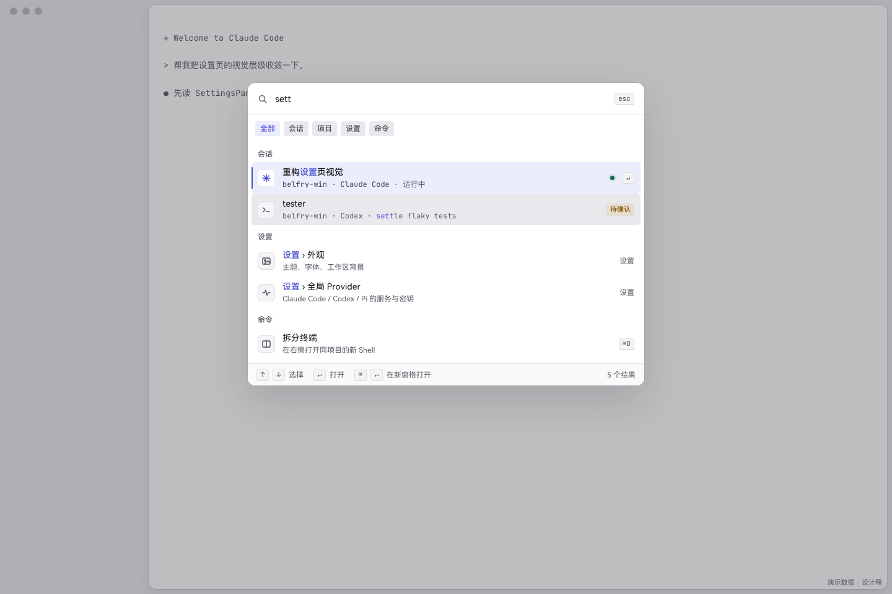
实装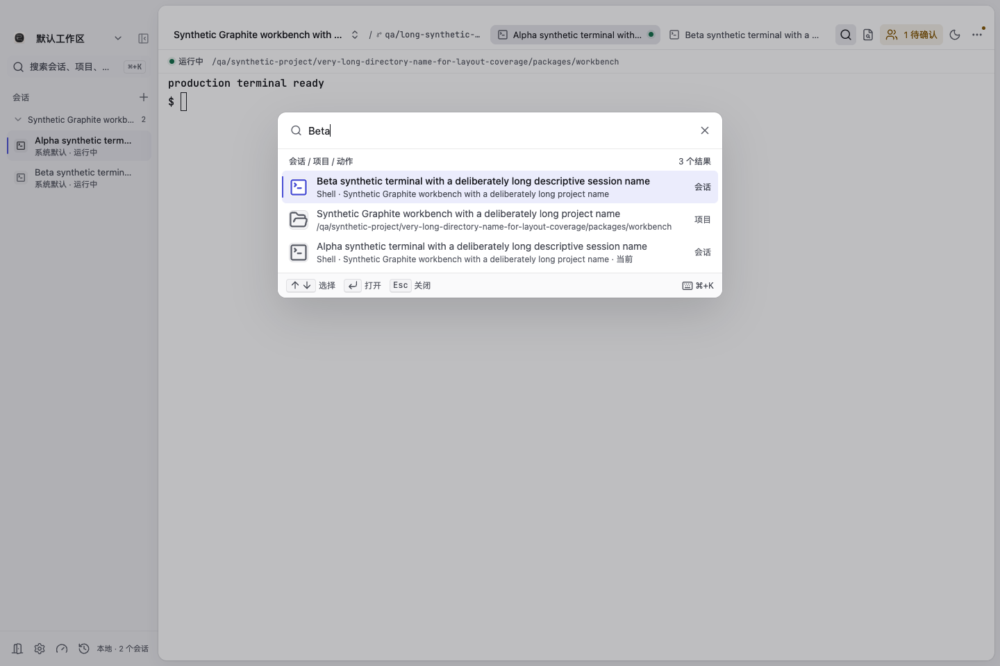
- ✓ 宽 640、r12、shadow-lg、scrim 遮罩、距顶 14vh；搜索栏 52 高 15px 无边框。
- ✓ 结果行 44、图标框 28；键盘候选 = accent-soft + 2px 圆头竖条 + 500，副标题提到 muted；hover 只换底不加竖条。
- ✓ 底栏 36、panel 底、键帽底边 2px。
- △ 范围筛选 chip（全部/会话/项目/设置/命令）未做：稿 README 已标注「仅视觉提议，有没有这个功能以 quickopen/model.ts 为准」——现模型没有按范围过滤的能力，加 chip 需要新功能，不属样式落地。实装用一行「会话 / 项目 / 动作 · N 个结果」上下文行代替。
- △ 分组标题（会话 / 设置 / 命令）未做：现模型按相关度单列混排，结果行右侧的 kind 标签（会话/项目）承担了分类信息。
插件中心 · 已安装列表
暗色
设计稿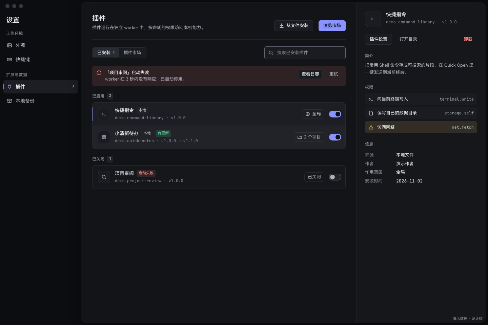
实装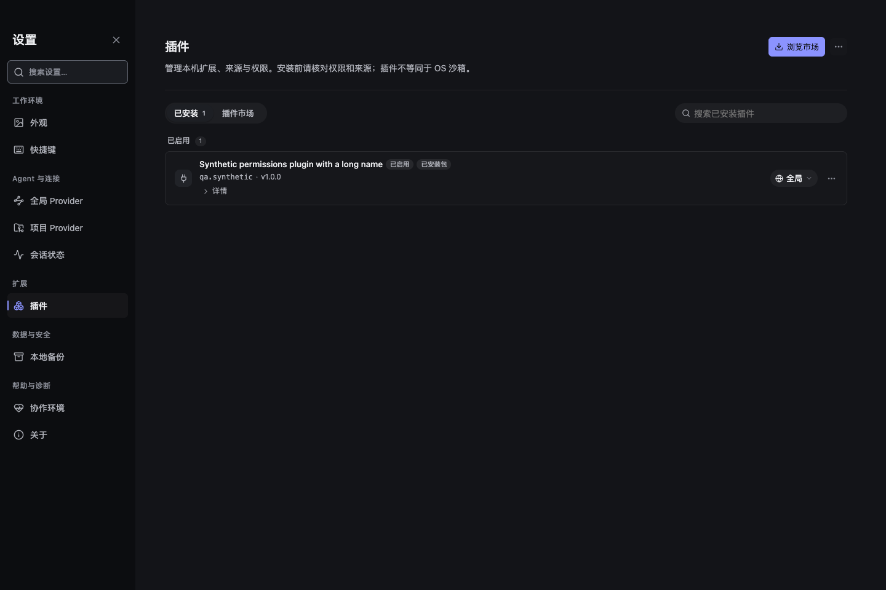
亮色
设计稿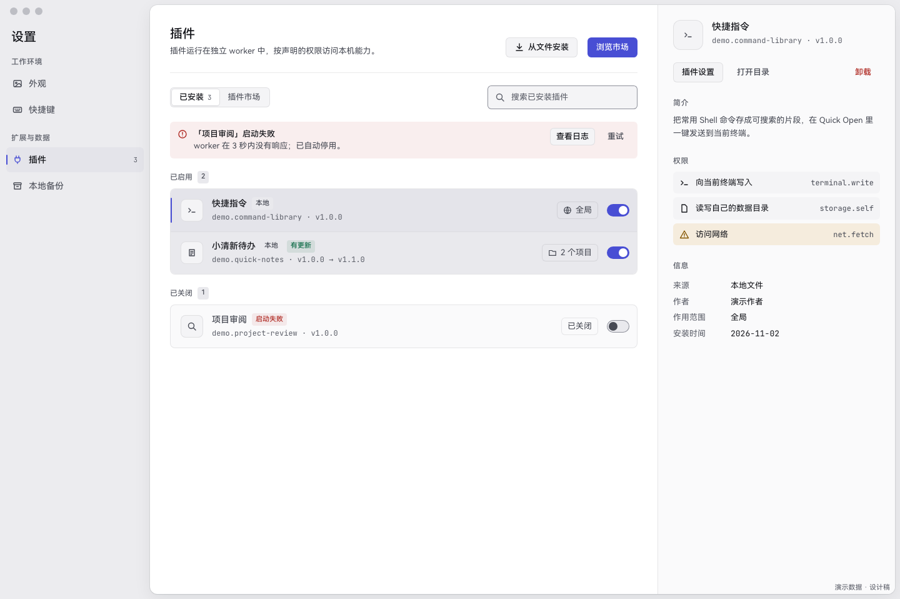
实装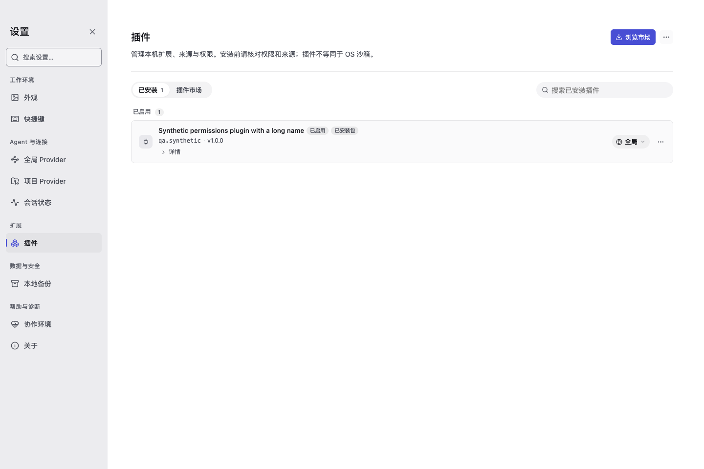
- ✓ 列表 = 分组外框（r8 + panel + 内描边）+ 行内 border-soft 分隔，行 ≥68；hover / 键盘焦点才整行高亮。
- ✓ 页头主按钮唯一实心、tabs 分段控件规格、搜索框。
- △ 右侧常驻详情栏未做成分栏：稿是「列表 + 380 详情栏」两栏，实装保持「行内展开详情 + 市场条目点开右侧抽屉」。原因：插件中心是 PI-Desktop 移植的宿主页（LGPL，third_party/pi-desktop），改两栏需要重写 InstalledPage 的布局与选中状态模型，超出样式落地；抽屉已按稿的详情栏规格重排（见下一节）。
- △ 行尾作用域用胶囊下拉（全局 ▾）而非稿里的描边胶囊 + 独立开关：启用/停用与作用域在现有 ScopeControl 里是同一个控件，拆开会改交互。
插件详情（市场条目抽屉）
对照设计稿 plugins.html 右侧的详情栏。
暗色 / 亮色
设计稿（详情栏在右侧 380 宽区域）实装 · 暗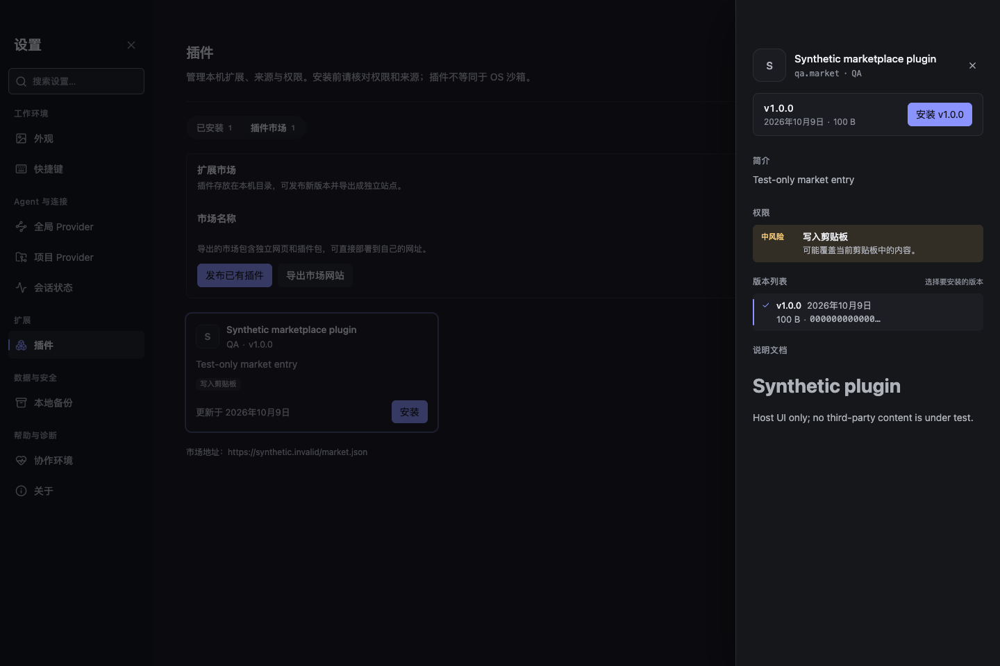
设计稿 · 亮实装 · 亮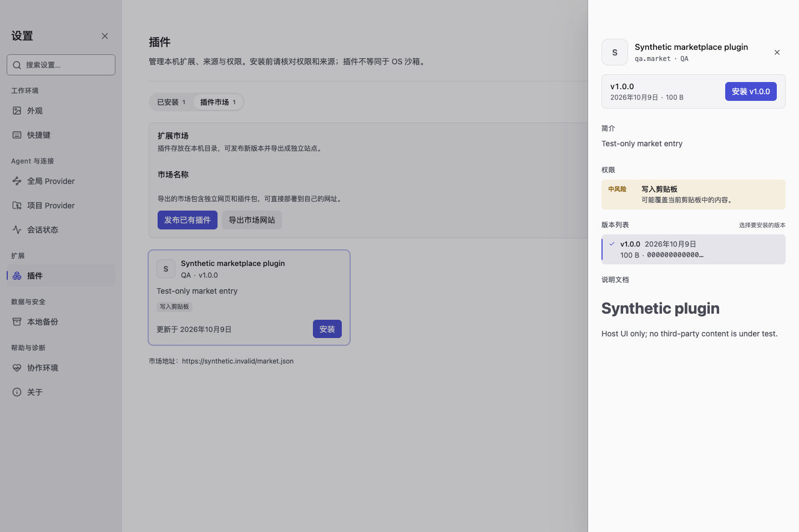
- ✓ panel 底、左侧 1px 分隔 + shadow-lg；头部 48 r12 图标块 + 15/500 标题 + 等宽 ID；关闭按钮 32。
- ✓ 分区标题 12/500 faint（不再全大写加字距）；权限每条一行 surface r6，中/高风险整行 warning/danger-soft。
- ✓ 版本列表选中 = sidebar-active + 2px 竖条（A13），安装是唯一实心按钮。
- ✓ 宽 380（按 obsidian-screens/README 插件中心一节规格）；README 正文里的长代码块在抽屉内横向滚动，不撑宽抽屉。
- △ README 正文的 h1 字号保持 Markdown 默认档：那是第三方插件作者的内容区，不套宿主标题规格。
弹窗
实装截取「从模板新建插件」弹窗（plugins-modal）；确认弹窗（.modal）实装截图见 ../panels/production-ui-generic-confirmation.png。
暗色
设计稿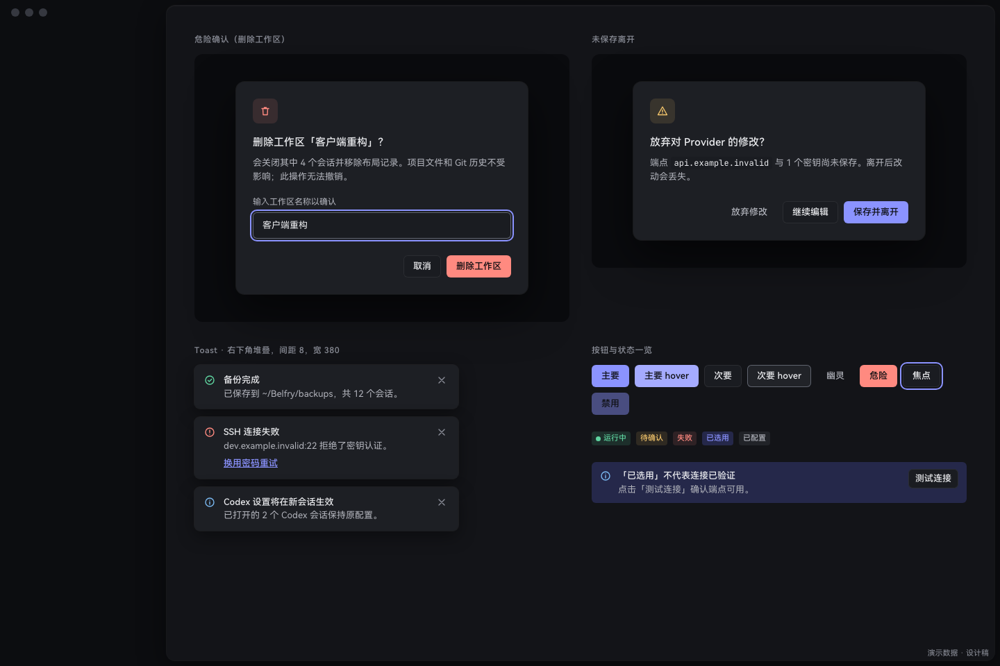
实装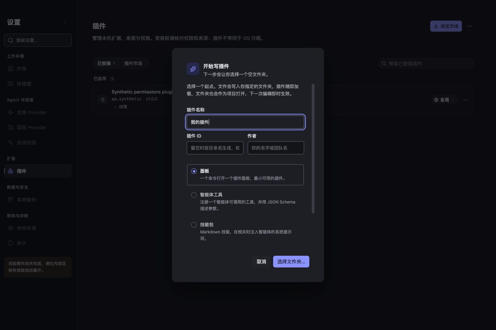
亮色
设计稿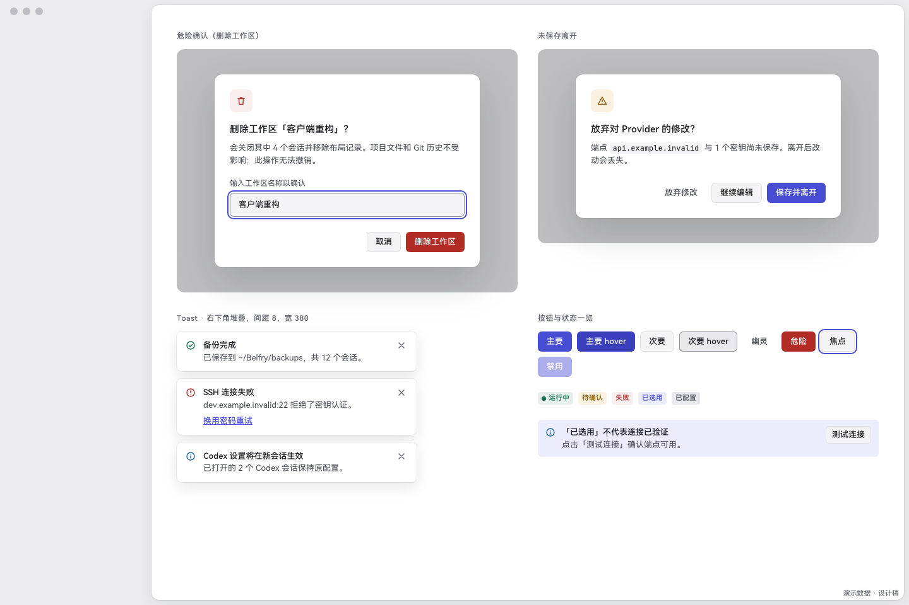
实装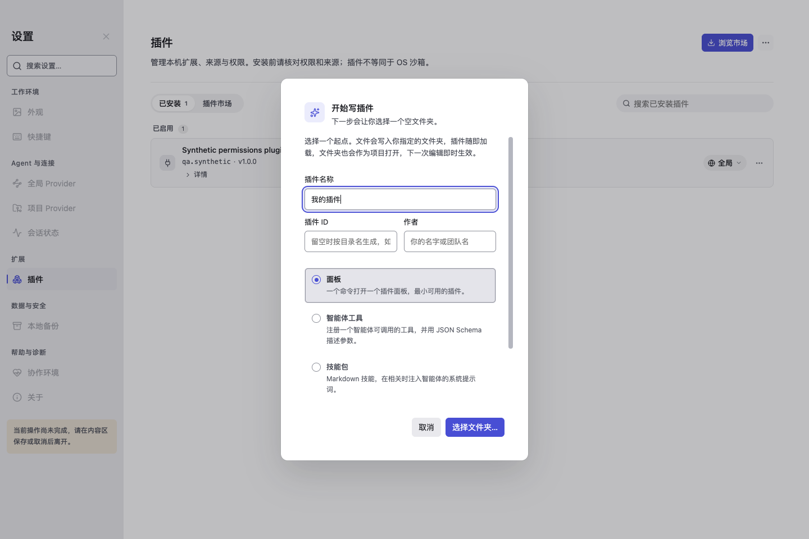
- ✓ 宽 440、内边距 24、r12、raised + shadow-lg；头部 36 r8 图标块（accent-soft）；标题 15/500；按钮 32 r6 右对齐，唯一实心主按钮。
- ✓ 字段 38 带描边，焦点 2px accent 外环；单选选中 = sidebar-active + border-strong 内描边（暗色下 raised 与 sidebar-active 只差一档，补描边才认得出）。
- ✓ 确认弹窗：危险按钮唯一实心（文字对 danger 8.51 / 6.50:1），焦点环可见；Toast 380 r8 shadow-md（实装截图见 ../panels/）。
- △ 模板弹窗内容可滚动（模板选项较多），稿里的确认弹窗是定高；滚动条走全局 --scrollbar，规格不变。